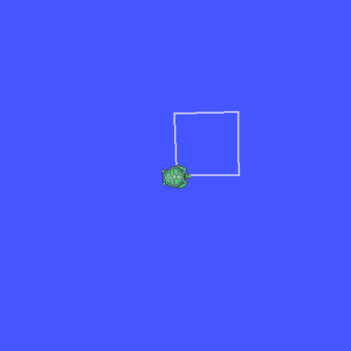

开始
这一部分把工作空间、第一个节点、节点命名、功能包与命令行工具走通： 读完以后，读者应当能复制并构建课程工作空间，运行一个自行停止的节点， 用启动参数改变节点名与命名空间，读懂功能包的两份构建文件， 并用命令行列出包、可执行文件与接口。0.6 是选学的小海龟观察。
本页 0.1 会复制并构建课程工作空间；构建完成后，本页命令默认在课程工作空间 $HOME/ros2_ws 中执行；开头标有
# 当前目录：课程目录 的命令在本页所在目录执行，该目录包含
示例代码/。新开终端先进入工作空间并加载环境：
# 当前目录：$HOME/ros2_ws
# 0.1 构建完成后执行
cd $HOME/ros2_ws
source /opt/ros/jazzy/setup.bash
source install/setup.bash
export ROS_DOMAIN_ID=42
export RCUTILS_CONSOLE_OUTPUT_FORMAT='[{severity}] [{name}]: {message}'
# 启动发现守护进程，避免第一次查询赶上冷启动
ros2 daemon start >/dev/null最后一行先启动发现守护进程。本页有只运行 1.5 秒的节点，若第一次查询 赶上守护进程冷启动，查询会错过这些节点。
需要清掉旧的构建产物时，在 $HOME/ros2_ws 中执行下面的命令，
再重新构建：
# 当前目录：$HOME/ros2_ws
bash clean.sh
课程假设读者已经会写 C++：类、继承、智能指针、lambda、std::vector
与 std::string，能用 g++ 编译一个源文件，能在终端
执行命令。课程不重复讲这些语法。
0.1课程地图与工作空间
ROS 2（Robot Operating System 2，机器人操作系统 2）是一组用于组织机器人 软件的库与工具。一个程序通常被拆成若干节点（node），每个节点只做 一件事；节点之间通过话题（topic）、服务（service）与 动作（action）交换数据。这样拆分以后，感知、控制与记录可以分别 编写、分别启动，也可以只替换其中一个节点。
课程的工作空间（workspace）是一个目录，里面按固定层次放置源码、构建产物 与安装产物。工作空间与其中的功能包（package）是这一部分最先要弄清的两个 概念：功能包是构建的最小单位，工作空间把一组功能包放在一起构建。
工作空间的四层
课程工作空间的结构如下。只在 src/ 里放源码与配置；
build/、install/ 与 log/ 都由构建工具
生成，删除后重新构建即可恢复。
ros2_ws/ ├── src/ │ ├── robot_interfaces/ 消息与服务定义 │ ├── robot_nodes/ C++ 节点 │ └── robot_bringup/ 启动文件与配置 ├── build/ 中间产物 ├── install/ 安装产物与环境脚本 └── log/ 构建日志
src/ 里的每个子目录是一个功能包，每个功能包必须有
package.xml 与一份构建文件。构建工具从 src/ 找到
全部功能包，按依赖关系排序，把产物写进 build/ 与
install/。把生成物放进 src/ 会让下一次构建把旧产物
当成源码扫描，也会让版本管理混入大量二进制文件。
课程把工作空间放在 $HOME/ros2_ws。ROS 2 的接口生成步骤按路径
拼接构建目标，路径中出现中文等非 ASCII 字符时，
rosidl_generate_interfaces 会报目标不存在；把工作空间复制到
只含 ASCII 字符的路径即可避开。源码随课程放在
示例代码/ros2_ws/src/，复制一次，之后都在
$HOME/ros2_ws 里构建。复制时一并带上课程提供的清理脚本；
它删除工作空间中的 build/、install/ 与
log/，用于从干净状态重新构建。
# 当前目录：课程目录
mkdir -p $HOME/ros2_ws
cp -r 示例代码/ros2_ws/src $HOME/ros2_ws/
cp 示例代码/ros2_ws/clean.sh $HOME/ros2_ws/
# 进入工作空间
cd $HOME/ros2_ws构建与加载环境
构建使用 colcon build。每个新终端先加载 ROS 2 本身，再加载
工作空间的安装环境；后一条脚本会把工作空间的包加入查找路径。
# 当前目录：$HOME/ros2_ws
source /opt/ros/jazzy/setup.bash
colcon build --symlink-install
source install/setup.bashStarting >>> robot_interfaces Finished <<< robot_interfaces [4.26s] Starting >>> robot_nodes Finished <<< robot_nodes [7.10s] Starting >>> robot_bringup Finished <<< robot_bringup [0.76s] Summary: 3 packages finished [12.2s]
方括号里的时间随机器负载变化，页面不把它当作固定结果。功能包的顺序由依赖
决定：robot_nodes 使用 robot_interfaces 生成的头文件，
所以接口包先构建。
需要清理构建产物时，在 $HOME/ros2_ws 中执行下面的命令：
# 当前目录：$HOME/ros2_ws
bash clean.sh
脚本只删除 build/、install/ 与
log/，删除前列出目录大小并询问确认；
加 --yes 可以跳过询问。
--symlink-install 让安装目录里的文件指向源码，修改 Python
启动文件或配置后不必重新安装；C++ 源码改动仍然需要重新构建。
--packages-select 只构建指定的包，例如只改了一个节点时可以写：
# 当前目录：$HOME/ros2_ws
colcon build --symlink-install --packages-select robot_nodesStarting >>> robot_nodes Finished <<< robot_nodes [0.09s] Summary: 1 package finished [0.18s]
域号与日志格式
ROS 2 节点通过域号（domain ID）分组。同一台机器上，域号不同的节点彼此 看不到，也不会交换消息。课程统一使用 42 号域，避免与其它终端或其它课程 的节点混在一起。
# 当前目录：$HOME/ros2_ws
export ROS_DOMAIN_ID=42
export RCUTILS_CONSOLE_OUTPUT_FORMAT='[{severity}] [{name}]: {message}'第二条设置日志格式。默认格式在每行前面带时间戳，每次运行都不同，页面无法 逐行对照；这里只保留级别、节点名与消息。格式串只影响显示，不改变日志级别， 也不改变节点记录的内容。两条变量都只对当前终端有效，新开终端要重新设置。
脚本接收一个工作空间路径，打印路径、src/ 中的功能包与
install/ 中的安装目录。下一条命令在本页所在目录执行；
路径中的个人目录在输出里写成 $WORKSPACE。
# 当前目录：课程目录
bash 示例代码/0.1-workspace-check.sh $HOME/ros2_wsworkspace: $WORKSPACE src packages: robot_bringup robot_interfaces robot_nodes install: robot_bringup robot_interfaces robot_nodes
三行包名与三个安装目录一一对应。若 install: 少了一行，
说明该包没有构建成功；先回到构建输出里找 Failed 的那一段。
只构建接口包 robot_interfaces，构建完成后显示 Target 消息的字段定义。命令顺序不能颠倒；最后一条命令使用 ros2 interface show --no-comments。
float64 x float64 y string label
看答案
先构建接口包，安装目录里才会出现消息定义；再查询时，
ros2 interface 才能从安装环境里找到
robot_interfaces/msg/Target。
# 当前目录：$HOME/ros2_ws
colcon build --symlink-install --packages-select robot_interfaces >/dev/null 2>&1
source install/setup.bash
ros2 interface show --no-comments robot_interfaces/msg/Targetfloat64 x float64 y string label
列出工作空间中的三个功能包，并列出 robot_nodes 中名为 hello_node 的可执行文件。包名按字母顺序输出；可执行文件一行只保留 包名 可执行文件名 的形式。
robot_bringup robot_interfaces robot_nodes robot_nodes hello_node
看答案
ros2 pkg list 会列出环境中的全部包，包含 ROS 2 自带的包；
过滤 robot_ 开头的三个名字即可。
ros2 pkg executables 的第一个字段是包名。
# 当前目录：$HOME/ros2_ws
ros2 pkg list | grep -E '^robot_(bringup|interfaces|nodes)$' | sort
ros2 pkg executables robot_nodes | grep ' hello_node$'robot_bringup robot_interfaces robot_nodes robot_nodes hello_node
你现在能写什么：复制课程工作空间，用 colcon build 构建全部功能包，加载安装环境，并用一条命令确认 src/ 与 install/ 中的包一一对应。
0.2第一个节点
节点是 ROS 2 进程中的一个对象。它有自己的名字，可以创建发布者、订阅者、
定时器与服务；rclcpp::spin 让节点持续等待并处理这些事件。
这一课写一个最小的节点：每 500 毫秒打印一行，第三行之后自行停止。
节点类与 main
节点类继承 rclcpp::Node，在构造函数里创建定时器；
main 负责初始化、交给执行器循环、最后关闭。下面这段包含
头文件、节点类与入口。
// 0.2 的第一个节点：每 500 ms 打印一行，第三行之后自行停止。
// 停止是为了让例子能在终端里结束，页面上的输出可以逐行对照。
#include <chrono>
#include <memory>
#include "rclcpp/rclcpp.hpp"
using namespace std::chrono_literals;
class HelloNode : public rclcpp::Node
{
public:
HelloNode()
: Node("hello_node"), count_(0)
{
timer_ = create_wall_timer(500ms, [this]() {
RCLCPP_INFO(get_logger(), "hello %d", count_);
++count_;
if (count_ == 3) {
rclcpp::shutdown();
}
});
}
private:
rclcpp::TimerBase::SharedPtr timer_;
int count_;
};
int main(int argc, char ** argv)
{
rclcpp::init(argc, argv);
rclcpp::spin(std::make_shared<HelloNode>());
rclcpp::shutdown();
return 0;
}
rclcpp::init 解析命令行参数并初始化通信；少了它，
创建节点会直接终止。rclcpp::spin 阻塞在当前线程，
反复取回调并执行；回调返回后继续等待。最后一行 rclcpp::shutdown
在循环退出后清理资源，正常结束时进程返回 0。
std::make_shared<HelloNode>() 创建一个临时共享指针，
它在 spin 调用期间保持节点对象存活，函数返回后对象才析构。
节点名 hello_node 在构造函数的 Node("hello_node")
中给出，下一课会用启动参数修改它。
定时器与日志
create_wall_timer 按系统时间周期触发回调。第一个参数是周期，
500ms 来自 std::chrono_literals；第二个参数是
可调用对象，这里用 lambda 捕获 this，以便访问成员。
RCLCPP_INFO(get_logger(), "hello %d", count_) 写一条信息级
日志。get_logger() 返回节点自己的日志器，日志名默认是节点名；
格式串与参数之间用逗号分隔，写法与 printf 类似，参数按格式串
中的占位符依次填入。
构建后直接运行。节点自己停止，命令会回到提示符。
# 当前目录：$HOME/ros2_ws
ros2 run robot_nodes hello_node[INFO] [hello_node]: hello 0 [INFO] [hello_node]: hello 1 [INFO] [hello_node]: hello 2
方括号中的 INFO 是级别，hello_node 是日志器名，
冒号后是消息。三行之间相隔约 500 毫秒；计数从 0 开始，是因为成员
count_ 在构造函数里初始化为 0。
让节点自行停止
ROS 2 节点通常一直运行，等待消息或服务请求。课程例子需要逐行对照输出，
所以每个例子在完成固定次数后调用 rclcpp::shutdown()。
它让 spin 返回，main 随后正常结束。真实系统里
节点多由外部信号停止，不需要在回调里关闭自己。
计数器在打印之后自增，再判断是否达到 3。若把判断放在打印之前， 输出会少一行或多一行；这类边界错误在发布与订阅回调里同样会出现， 每次都要按“先处理这一条，再决定是否停止”的顺序写。
把例题的周期改为 1 秒，共打印五行，仍然在第五行之后停止。节点名保持不变。
[INFO] [hello_node]: hello 0 [INFO] [hello_node]: hello 1 [INFO] [hello_node]: hello 2 [INFO] [hello_node]: hello 3 [INFO] [hello_node]: hello 4
看答案
周期写成 1s，停止条件改成 count_ == 5。
计数仍然从 0 开始，因此最后一行是 hello 4。
#include <chrono>
#include <memory>
#include "rclcpp/rclcpp.hpp"
using namespace std::chrono_literals;
class HelloNode : public rclcpp::Node
{
public:
HelloNode()
: Node("hello_node"), count_(0)
{
timer_ = create_wall_timer(1s, [this]() {
RCLCPP_INFO(get_logger(), "hello %d", count_);
++count_;
if (count_ == 5) {
rclcpp::shutdown();
}
});
}
private:
rclcpp::TimerBase::SharedPtr timer_;
int count_;
};
int main(int argc, char ** argv)
{
rclcpp::init(argc, argv);
rclcpp::spin(std::make_shared<HelloNode>());
rclcpp::shutdown();
return 0;
}[INFO] [hello_node]: hello 0 [INFO] [hello_node]: hello 1 [INFO] [hello_node]: hello 2 [INFO] [hello_node]: hello 3 [INFO] [hello_node]: hello 4
把节点名改为 tick_node，日志同时打印节点名与计数，格式为“节点名 空格 计数”。仍然打印三行后停止，使用 get_name() 取得节点名。
[INFO] [tick_node]: tick_node 0 [INFO] [tick_node]: tick_node 1 [INFO] [tick_node]: tick_node 2
看答案
get_name() 返回不带命名空间的节点名。
日志器名已经由节点名决定，消息里再打印一次，便于确认节点名
是否改对。
#include <chrono>
#include <memory>
#include "rclcpp/rclcpp.hpp"
using namespace std::chrono_literals;
class TickNode : public rclcpp::Node
{
public:
TickNode()
: Node("tick_node"), count_(0)
{
timer_ = create_wall_timer(500ms, [this]() {
RCLCPP_INFO(get_logger(), "%s %d", get_name(), count_);
++count_;
if (count_ == 3) {
rclcpp::shutdown();
}
});
}
private:
rclcpp::TimerBase::SharedPtr timer_;
int count_;
};
int main(int argc, char ** argv)
{
rclcpp::init(argc, argv);
rclcpp::spin(std::make_shared<TickNode>());
rclcpp::shutdown();
return 0;
}[INFO] [tick_node]: tick_node 0 [INFO] [tick_node]: tick_node 1 [INFO] [tick_node]: tick_node 2
你现在能写什么：写一个继承 rclcpp::Node 的节点，在定时器回调里按固定周期打印日志，并在指定次数后让进程自行结束。
0.3节点名、命名空间与重映射
同一个可执行文件可以启动多次。每次启动都是一个独立节点，节点名与命名空间
决定它在图中的位置；启动参数可以在不改代码的前提下改变这些名字。
这一课用同一个 hello_node 启动两个实例，观察节点列表与节点信息。
完全限定名
节点名由命名空间（namespace）与基名组成，合起来叫完全限定名（fully
qualified name）。默认命名空间是 /，节点 hello_node
的完全限定名是 /hello_node。若命名空间是 /lab，
基名是 worker，完全限定名就是 /lab/worker。
ROS 2 允许两个节点使用相同的完全限定名。此时 ros2 node list
会给出警告并列出两行相同的名称，ros2 node info 只显示其中一个，
并说明图中有两个同名节点；参数查询、终止进程与日志来源都难以指认。
不同命名空间下的同名基名可以共存，因为完全限定名不同。命名时应当保证
完全限定名在域内唯一。
启动参数与重映射
ros2 run 后面的普通参数传给程序本身；--ros-args
之后是 ROS 2 的参数。节点名用 --remap __node:=新名字 或简写
-r __node:=新名字；命名空间用 __ns:=/lab。
话题、服务与动作也可以按 原名:=新名 重映射。
# 当前目录：$HOME/ros2_ws
ros2 run robot_nodes hello_node \
--ros-args -r __node:=worker -r __ns:=/lab
两条重映射同时生效时，节点完全限定名是 /lab/worker，
日志器名变成 lab.worker：命名空间中的斜杠在日志名里写成点。
这是排查日志来源时最容易忽略的一处变化。
在同一个终端后台启动默认实例与改名实例，等半秒后查看节点列表； 再查看改名实例的完整端点信息。两个实例都在 1.5 秒后自行停止。
# 当前目录：$HOME/ros2_ws
ros2 run robot_nodes hello_node >/dev/null 2>&1 &
ros2 run robot_nodes hello_node \
--ros-args -r __node:=worker -r __ns:=/lab >/dev/null 2>&1 &
sleep 0.5
ros2 node list | sort
ros2 node info /lab/worker
wait节点列表：
/hello_node /lab/worker
节点信息：
/lab/worker
Subscribers:
/parameter_events: rcl_interfaces/msg/ParameterEvent
Publishers:
/parameter_events: rcl_interfaces/msg/ParameterEvent
/rosout: rcl_interfaces/msg/Log
Service Servers:
/lab/worker/describe_parameters: rcl_interfaces/srv/DescribeParameters
/lab/worker/get_parameter_types: rcl_interfaces/srv/GetParameterTypes
/lab/worker/get_parameters: rcl_interfaces/srv/GetParameters
/lab/worker/get_type_description: type_description_interfaces/srv/GetTypeDescription
/lab/worker/list_parameters: rcl_interfaces/srv/ListParameters
/lab/worker/set_parameters: rcl_interfaces/srv/SetParameters
/lab/worker/set_parameters_atomically: rcl_interfaces/srv/SetParametersAtomically
Service Clients:
Action Servers:
Action Clients:
节点列表有两项。节点信息的第一行是节点名，后面的服务名都带
/lab/worker/ 前缀，说明命名空间已经写进这些名称；
/rosout 与 /parameter_events 是系统话题。
node info 看到什么
ros2 node info 按订户、发布者、服务端、客户端、动作端分组列出
端点。订阅者与发布者后面是消息类型；服务端与客户端后面是服务类型。
即使节点代码里没有显式创建这些端点，parameter_events 与
rosout 也会出现，因为每个节点默认带参数服务与日志发布。
端点名称是否带命名空间，是判断相对名称与绝对名称的直接证据。
create_publisher("chatter", …) 用的是相对名称，
它会自动拼上节点命名空间；以 / 开头的名称则是绝对名称，
不再拼接。
用启动参数把 hello_node 放进 /lab 命名空间，基名不变。节点运行期间用 ros2 node list 确认它的完全限定名。
/lab/hello_node
看答案
只改 __ns，基名仍是 hello_node。
列表里的名称是拼接后的完全限定名。
# 当前目录：$HOME/ros2_ws
ros2 run robot_nodes hello_node --ros-args -r __ns:=/lab >/dev/null 2>&1 &
sleep 0.5
ros2 node list | grep '^/lab/hello_node$'
wait/lab/hello_node
把节点名改为 worker，命名空间设为 /demo，确认完全限定名。再用一句话说明这个完全限定名由哪两部分组成。
/demo/worker
看答案
完全限定名 /demo/worker 由命名空间 /demo
与节点基名 worker 组成。两条重映射分别设置这两部分，
顺序不影响结果。
# 当前目录：$HOME/ros2_ws
ros2 run robot_nodes hello_node \
--ros-args -r __node:=worker -r __ns:=/demo >/dev/null 2>&1 &
sleep 0.5
ros2 node list | grep '^/demo/worker$'
wait/demo/worker
你现在能写什么：用 __node 与 __ns 启动同一个节点，读出它的完全限定名，并从 node info 的端点名称判断相对名称最终落在哪个命名空间。
0.4功能包、依赖与构建
功能包是 ROS 2 构建与分发的最小单位。一个 C++ 功能包至少有两份文件：
package.xml 声明包的元数据与依赖，CMakeLists.txt
声明怎样编译与安装。这一课读课程里的 robot_nodes 包，
再改它的依赖与可执行文件。
package.xml
根元素 <package format="3"> 指定格式版本。
<name> 是包名，必须与目录名一致；
<version>、<description>、
<maintainer> 与 <license> 是元数据。
<buildtool_depend> 声明构建工具，
<depend> 同时覆盖构建与运行依赖。
<?xml version="1.0"?>
<package format="3">
<name>robot_nodes</name>
<version>0.1.0</version>
<description>课程用 C++ 节点</description>
<maintainer email="tup@example.com">TUP</maintainer>
<license>Apache-2.0</license>
<buildtool_depend>ament_cmake</buildtool_depend>
<depend>rclcpp</depend>
<depend>rclcpp_components</depend>
<depend>rclcpp_action</depend>
<depend>std_msgs</depend>
<depend>example_interfaces</depend>
<depend>rcl_interfaces</depend>
<depend>robot_interfaces</depend>
<export>
<build_type>ament_cmake</build_type>
</export>
</package>
ament_cmake 是构建工具依赖，提供 CMake 宏；
其余 <depend> 是代码依赖，覆盖节点用到的客户端库与
接口包。构建工具会读取这些声明，安排包的构建顺序，并在安装环境里
记录运行依赖。
CMakeLists.txt
CMake 文件先声明最低版本与项目名，再查找依赖，随后为每个可执行文件写
add_executable 与 ament_target_dependencies，
最后安装到 lib/包名。最低版本写 3.16，与 ROS 2 Jazzy 使用的
CMake 版本范围一致。
cmake_minimum_required(VERSION 3.16)
project(robot_nodes)
if(NOT CMAKE_CXX_STANDARD)
set(CMAKE_CXX_STANDARD 17)
set(CMAKE_CXX_STANDARD_REQUIRED ON)
endif()
find_package(ament_cmake REQUIRED)
find_package(rclcpp REQUIRED)
find_package(rclcpp_action REQUIRED)
find_package(rclcpp_components REQUIRED)
find_package(std_msgs REQUIRED)
find_package(example_interfaces REQUIRED)
find_package(rcl_interfaces REQUIRED)
find_package(robot_interfaces REQUIRED)
find_package(Threads REQUIRED)
set(NODE_TARGETS
hello_node
talker
listener
target_talker
target_listener
qos_talker
qos_listener
qos_listener_best_effort
multi_talker
filter_listener
diag_talker
add_server
add_client
area_server
area_client
parameter_node
param_demo
patrol_server
patrol_client
patrol_cancel_client
queue_demo
executor_probe
group_probe
long_task_demo
)
add_executable(hello_node src/hello_node.cpp)
ament_target_dependencies(hello_node rclcpp)
add_executable(talker src/talker.cpp)
ament_target_dependencies(talker rclcpp std_msgs)
add_executable(listener src/listener.cpp)
ament_target_dependencies(listener rclcpp std_msgs)
add_executable(target_talker src/target_talker.cpp)
ament_target_dependencies(target_talker rclcpp robot_interfaces)
add_executable(target_listener src/target_listener.cpp)
ament_target_dependencies(target_listener rclcpp robot_interfaces)
add_executable(qos_talker src/qos_talker.cpp)
ament_target_dependencies(qos_talker rclcpp std_msgs)
add_executable(qos_listener src/qos_listener.cpp)
ament_target_dependencies(qos_listener rclcpp std_msgs)
add_executable(qos_listener_best_effort src/qos_listener_best_effort.cpp)
ament_target_dependencies(qos_listener_best_effort rclcpp std_msgs)
add_executable(multi_talker src/multi_talker.cpp)
ament_target_dependencies(multi_talker rclcpp std_msgs)
add_executable(filter_listener src/filter_listener.cpp)
ament_target_dependencies(filter_listener rclcpp std_msgs)
add_executable(diag_talker src/diag_talker.cpp)
ament_target_dependencies(diag_talker rclcpp std_msgs)
add_executable(add_server src/add_server.cpp)
ament_target_dependencies(add_server rclcpp example_interfaces)
add_executable(add_client src/add_client.cpp)
ament_target_dependencies(add_client rclcpp example_interfaces)
add_executable(area_server src/area_server.cpp)
ament_target_dependencies(area_server rclcpp robot_interfaces)
add_executable(area_client src/area_client.cpp)
ament_target_dependencies(area_client rclcpp robot_interfaces)
add_executable(parameter_node src/parameter_node.cpp)
ament_target_dependencies(parameter_node rclcpp rcl_interfaces)
add_executable(param_demo src/param_demo.cpp)
ament_target_dependencies(param_demo rclcpp std_msgs rcl_interfaces)
add_executable(patrol_server src/patrol_server.cpp)
ament_target_dependencies(patrol_server rclcpp rclcpp_action robot_interfaces)
add_executable(patrol_client src/patrol_client.cpp)
ament_target_dependencies(patrol_client rclcpp rclcpp_action robot_interfaces)
add_executable(patrol_cancel_client src/patrol_cancel_client.cpp)
ament_target_dependencies(patrol_cancel_client rclcpp rclcpp_action robot_interfaces)
# 第 4、5 部分的示例
add_executable(queue_demo src/queue_demo.cpp)
ament_target_dependencies(queue_demo rclcpp std_msgs)
add_executable(executor_probe src/executor_probe.cpp)
ament_target_dependencies(executor_probe rclcpp)
target_link_libraries(executor_probe Threads::Threads)
add_executable(group_probe src/group_probe.cpp)
ament_target_dependencies(group_probe rclcpp)
target_link_libraries(group_probe Threads::Threads)
add_executable(long_task_demo src/long_task_demo.cpp)
ament_target_dependencies(long_task_demo rclcpp)
target_link_libraries(long_task_demo Threads::Threads)
add_library(talker_component SHARED src/talker_component.cpp)
ament_target_dependencies(talker_component rclcpp rclcpp_components std_msgs)
rclcpp_components_register_nodes(talker_component "robot_nodes::TalkerComponent")
install(TARGETS ${NODE_TARGETS}
DESTINATION lib/${PROJECT_NAME}
)
install(TARGETS talker_component
ARCHIVE DESTINATION lib
LIBRARY DESTINATION lib
RUNTIME DESTINATION bin
)
install(DIRECTORY config
DESTINATION share/${PROJECT_NAME}
)
ament_package()
CMAKE_CXX_STANDARD 17 让全部目标使用 C++17。
add_executable(目标名 源文件) 的第一个参数是
目标名，也是安装后的可执行文件名；ament_target_dependencies
把依赖的头文件路径与链接库加到目标上。
install(TARGETS … DESTINATION lib/${PROJECT_NAME}) 决定
ros2 run 能否找到程序。安装目录是
install/robot_nodes/lib/robot_nodes/，ros2 run
在包的 lib/ 下按可执行文件名查找，不需要写完整路径。
依赖与构建顺序
接口包先生成消息代码，节点包再包含生成的头文件。构建单个节点包时，
若接口包尚未构建，CMake 会在 find_package(robot_interfaces)
处失败。正确顺序是先构建接口包，再构建节点包；或者一次构建整个工作空间，
由 colcon 按依赖排序。
# 当前目录：$HOME/ros2_ws
colcon build --symlink-install --packages-select robot_interfaces
colcon build --symlink-install --packages-select robot_nodes
修改了 msg/Target.msg 之后，使用该消息的节点必须重新构建。
只重新构建节点包而不构建接口包时，节点仍会包含旧的头文件；构建输出看起来
成功，运行结果却缺字段。这类问题先查接口包的构建时间，再查节点包。
在接口包已经构建的前提下，只构建节点包。输出保留开始、结束与汇总三行； 方括号里的时间随机器变化。
# 当前目录：$HOME/ros2_ws
colcon build --symlink-install --packages-select robot_nodesStarting >>> robot_nodes Finished <<< robot_nodes [0.09s] Summary: 1 package finished [0.18s]
Finished 表示编译与安装都成功；若出现
Failed，该包后面的依赖包不会继续构建。
为使用 std_msgs/msg/String 的节点补上依赖：在 package.xml 的依赖区写出正确的一行，并说明它为什么放在 <depend> 而不是 <buildtool_depend>。把这一行作为命令的输出。
<depend>std_msgs</depend>
看答案
std_msgs 是代码依赖，不是构建工具，所以写在
<depend> 中。<buildtool_depend>
留给 ament_cmake 这类提供构建脚本的包。
<depend>std_msgs</depend><depend>std_msgs</depend>
在 robot_nodes 中新增可执行文件 info_node，节点名也取 info_node：节点打印一行 robot ready 后停止。把它加入 CMake 的安装列表，构建后运行，确认输出。
[INFO] [info_node]: robot ready
看答案
新建一个源文件，内容如下；CMake 里加一个目标，再为它写一条安装规则。 节点只创建一次定时器，打印后立即关闭。
#include <chrono>
#include <memory>
#include "rclcpp/rclcpp.hpp"
using namespace std::chrono_literals;
class InfoNode : public rclcpp::Node
{
public:
InfoNode()
: Node("info_node")
{
timer_ = create_wall_timer(100ms, [this]() {
RCLCPP_INFO(get_logger(), "robot ready");
rclcpp::shutdown();
});
}
private:
rclcpp::TimerBase::SharedPtr timer_;
};
int main(int argc, char ** argv)
{
rclcpp::init(argc, argv);
rclcpp::spin(std::make_shared<InfoNode>());
rclcpp::shutdown();
return 0;
}add_executable(info_node src/info_node.cpp)
ament_target_dependencies(info_node rclcpp)
install(TARGETS info_node
DESTINATION lib/${PROJECT_NAME}
)[INFO] [info_node]: robot ready
你现在能写什么：为一个 C++ 功能包写 package.xml 与 CMakeLists.txt，声明依赖、编译可执行文件并安装到 lib/包名，再按依赖顺序构建接口包与节点包。
0.5命令行工具与运行观察
ROS 2 的命令行工具以 ros2 开头，后面跟子命令。它们读取当前
终端的安装环境，不需要节点代码配合。这一课用四条命令观察课程工作空间：
有哪些包、包里有哪个可执行文件、包安装在哪里、接口有哪些字段。
包与可执行文件
ros2 pkg list 列出环境中可见的全部功能包；
ros2 pkg executables 包名 列出该包安装的可执行文件；
ros2 pkg prefix 包名 打印安装前缀。前缀下通常有
lib/包名 与 share/包名；导出头文件的包还会多一个
include/包名。
ros2 run 包名 可执行文件名 先在安装环境里找到包，再执行
lib/包名/可执行文件名。它不会改变当前目录，也不会自动加载
工作空间；这些都由终端的 source 完成。
接口查看
接口（interface）包括消息、服务与动作三类。
ros2 interface list 列出全部接口，
ros2 interface show 类型名 显示定义。类型名写成
包名/msg/消息名、包名/srv/服务名 或
包名/action/动作名。
生成的头文件路径与类型名对应：std_msgs/msg/String 对应
std_msgs/msg/string.hpp，C++ 命名空间是
std_msgs::msg，类名是 String。
自定义消息也遵循同一规则：包名与类型名决定生成的头文件路径与 C++ 命名空间。
依次列出课程包、robot_nodes 的 hello_node、
安装前缀与 std_msgs/msg/String 的字段。前缀中的个人目录
写成 $WORKSPACE。
# 当前目录：$HOME/ros2_ws
ros2 pkg list | grep -E '^robot_(bringup|interfaces|nodes)$' | sort
ros2 pkg executables robot_nodes | grep ' hello_node$'
ros2 pkg prefix robot_nodes
ros2 interface show --no-comments std_msgs/msg/Stringrobot_bringup robot_interfaces robot_nodes robot_nodes hello_node $WORKSPACE/install/robot_nodes string data
最后一行是消息定义：只有一个名为 data 的字符串字段。
前面几行说明包、可执行文件与安装位置之间的对应关系。
用一条命令查看 robot_nodes 中的 hello_node，输出保留“包名 可执行文件名”这一行。
robot_nodes hello_node
看答案
ros2 pkg executables 每行先打印包名，再打印可执行文件名；
用 grep 只留下 hello_node 那一行。
# 当前目录：$HOME/ros2_ws
ros2 pkg executables robot_nodes | grep ' hello_node$'robot_nodes hello_node
显示 std_msgs/msg/String 的字段定义，不要注释与空行。
string data
看答案
--no-comments 去掉定义文件里的注释；
输出只剩字段类型与字段名。
# 当前目录：$HOME/ros2_ws
ros2 interface show --no-comments std_msgs/msg/Stringstring data
你现在能写什么：用 ros2 pkg 确认一个包是否安装、安装在哪里、包含哪些可执行文件，并用 ros2 interface show 读出接口字段。
0.6小海龟：观察现成节点（选学）
turtlesim 是 ROS 2 自带的二维仿真包，提供一个海龟窗口与操作
终端。它不是课程工作空间的一部分，也不要求安装；测试机已经装好，
没有图形界面时跳过这一课。这一课只观察现成节点，不修改它的源码，
目的是把前面学到的节点、话题、服务与动作放到一个真实节点上对照。
启动与操作
需要两个终端。第一个终端启动仿真器，出现一个带海龟的窗口；第二个终端 启动键盘操作节点，按方向键让海龟移动。两个节点在同一个域中， 操作节点向仿真器发布速度指令。
# 终端一（$HOME/ros2_ws）
ros2 run turtlesim turtlesim_node# 终端二（$HOME/ros2_ws）
ros2 run turtlesim turtle_teleop_keyturtle1 的初始位置；
此时还没有收到速度指令。
操作节点的终端必须保持焦点，方向键才会被读取。海龟移动时，仿真器窗口里 的轨迹会保留。操作终端把按键转换成速度指令，仿真器接收指令并更新位姿， 两个节点之间因此有持续的数据流动。

/clear
服务清屏。
话题、服务与动作
turtlesim_node 发布位姿与颜色，订阅速度指令；它还提供清屏、
重置、生成、删除与传送等服务，以及一个旋转到指定角度的动作。
用 ros2 topic list -t、ros2 service list -t 与
ros2 action list -t 可以分别看到这三类接口。
| 名称 | 类别 | 类型 |
|---|---|---|
/turtle1/cmd_vel | 话题 | geometry_msgs/msg/Twist |
/turtle1/pose | 话题 | turtlesim/msg/Pose |
/clear | 服务 | std_srvs/srv/Empty |
/spawn | 服务 | turtlesim/srv/Spawn |
/turtle1/rotate_absolute | 动作 | turtlesim/action/RotateAbsolute |
三类通信的差别在请求与反馈的形式：话题持续发送，服务一次请求一次响应， 动作带目标、反馈与结果。
仿真器已经启动时，运行观察脚本：列出 turtle1 的话题、服务与
动作，读一次位姿，再调用 /clear。位姿数值随海龟位置变化，
这里保留一次真实读数。
# 当前目录：课程目录
bash 示例代码/0.6-observe_turtle.shtopics: /turtle1/cmd_vel [geometry_msgs/msg/Twist] /turtle1/color_sensor [turtlesim/msg/Color] /turtle1/pose [turtlesim/msg/Pose] services: /clear [std_srvs/srv/Empty] /kill [turtlesim/srv/Kill] /reset [std_srvs/srv/Empty] /spawn [turtlesim/srv/Spawn] /turtle1/set_pen [turtlesim/srv/SetPen] /turtle1/teleport_absolute [turtlesim/srv/TeleportAbsolute] /turtle1/teleport_relative [turtlesim/srv/TeleportRelative] actions: /turtle1/rotate_absolute [turtlesim/action/RotateAbsolute] pose: x: 5.544444561004639 y: 5.544444561004639 theta: 0.0 linear_velocity: 0.0 angular_velocity: 0.0 --- clear: waiting for service to become available... requester: making request: std_srvs.srv.Empty_Request() response: std_srvs.srv.Empty_Response()
x、y 的数值依赖海龟当前的位置，海龟移动后
会变化；theta 是朝向角，单位为弧度。服务调用输出里的
Empty_Request 与 Empty_Response 都没有字段，
这是因为清屏服务不需要参数，也不返回数据。
启动 turtlesim_node，列出与 turtle1 有关的全部话题。只保留以 /turtle1/ 开头的话题，按字母顺序输出。
/turtle1/cmd_vel /turtle1/color_sensor /turtle1/pose
看答案
仿真器启动后，turtle1 的三条话题才会出现；
系统话题 /parameter_events 与 /rosout
不以 /turtle1/ 开头，被过滤掉。
# 当前目录：$HOME/ros2_ws
ros2 run turtlesim turtlesim_node >/dev/null 2>&1 &
sleep 2
ros2 topic list | grep '^/turtle1/' | sort/turtle1/cmd_vel /turtle1/color_sensor /turtle1/pose
在 /spawn 服务中生成一只名为 turtle2 的海龟，位置为 (2.0, 2.0)，朝向为 0；然后列出以 /turtle2/ 开头的话题。服务调用的返回内容不需要输出。
/turtle2/cmd_vel /turtle2/color_sensor /turtle2/pose
看答案
/spawn 的请求字段是 x、y、
theta 与 name。生成后，新海龟拥有与
turtle1 同构的三条话题，动作也增加一项。
# 当前目录：$HOME/ros2_ws
ros2 run turtlesim turtlesim_node >/dev/null 2>&1 &
sleep 2
ros2 service call /spawn turtlesim/srv/Spawn \
"{x: 2.0, y: 2.0, theta: 0.0, name: 'turtle2'}" >/dev/null
sleep 0.5
ros2 topic list | grep '^/turtle2/' | sort/turtle2/cmd_vel /turtle2/color_sensor /turtle2/pose
你现在能写什么：启动一个现成节点，分别列出它的话题、服务与动作，读一次话题消息，并调用一次服务，把观察到的接口与通信类别对应起来。